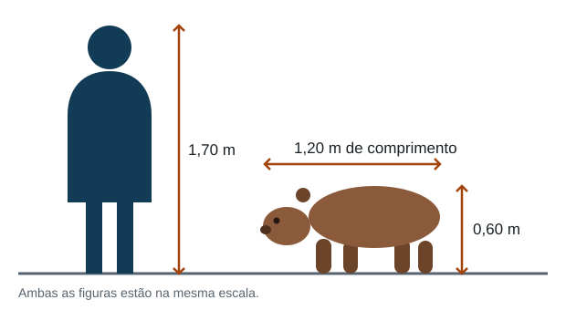
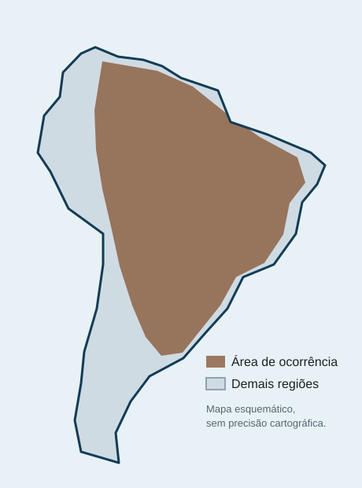

Capivara
A capivara (Hydrochoerus hydrochaeris) é um mamífero roedor da família Caviidae e o maior roedor vivo do mundo. Semiaquática e herbívora, habita áreas próximas à água em quase toda a América do Sul, onde vive em grupos sociais numerosos.
Etimologia
A palavra capivara vem do tupi kapii'gwara, que
significa aproximadamente comedor de capim
. O nome do género,
Hydrochoerus, tem origem grega e junta hydor
(água) e choiros (porco) — literalmente
porco d'água
, uma referência ao hábito semiaquático do animal.
O bicho recebe nomes regionais variados: carpincho nos países hispano-americanos do Cone Sul, chigüire na Venezuela e ronsoco na Amazónia peruana.
Taxonomia
Apesar do porte, a capivara não é aparentada com os porcos: pertence à ordem Rodentia e à família Caviidae, a mesma do porquinho-da-índia e dos preás. Dentro dessa família, ocupa a subfamília Hydrochoerinae, que compartilha com o género Kerodon, dos mocós.[1]
Espécies do género
O género Hydrochoerus tem duas espécies viventes. A capivara comum, H. hydrochaeris, é a de ampla distribuição sul-americana. A capivara-menor, H. isthmius, é bem menor e ocorre no Panamá, no norte da Colômbia e no oeste da Venezuela.
Descrição física
A capivara adulta mede entre 1,06 e 1,34 metro de comprimento, com cerca de 0,50 a 0,60 metro de altura na cernelha, e pesa de 35 a 66 quilogramas. As fêmeas costumam ser um pouco mais pesadas que os machos. O corpo é maciço e em forma de barril, a pelagem é dura e esparsa, de cor castanho-avermelhada, e a cauda é vestigial — praticamente inexistente.

Vários traços revelam a vida na água: os olhos, as orelhas e as narinas ficam no alto da cabeça, o que permite ao animal manter-se quase todo submerso enquanto respira e observa o entorno. As patas são parcialmente interdigitadas, com quatro dedos nas dianteiras e três nas traseiras. Os machos adultos têm no focinho uma glândula odorífera saliente, o morrillo, usada para marcar território.
Dentição
Como em todos os roedores, os incisivos crescem continuamente ao longo da vida e se desgastam pelo atrito da alimentação. Os molares também são de crescimento contínuo, uma adaptação ao capim abrasivo que compõe a maior parte da dieta.
Distribuição e habitat

A capivara ocorre a leste dos Andes, da Venezuela e da Colômbia até o norte da Argentina e o Uruguai, passando por toda a região central do Brasil. Está ausente do Chile. A espécie depende de água doce e nunca se afasta muito dela: vive em várzeas, brejos, margens de rios e lagoas, campos alagados e áreas de mata ciliar.
As maiores concentrações aparecem em planícies inundáveis como o Pantanal, no Brasil, e os Llanos, na Venezuela e na Colômbia. A capivara também se adaptou a ambientes alterados: é comum encontrá-la em parques urbanos, campos de golfe e margens de represas, desde que haja água, pasto e algum abrigo.
Comportamento
É um animal social. Vive em grupos que costumam reunir de dez a vinte indivíduos, formados por um macho dominante, várias fêmeas, filhotes e machos subordinados. Na estação seca, quando os animais se concentram nos poucos corpos d'água restantes, esses grupos podem se juntar e chegar a uma centena de indivíduos.
A comunicação é bastante vocal: assobios, latidos curtos de alarme, grunhidos e um ronronar baixo usado entre mãe e filhote. Ao perceber perigo, o primeiro animal a notar emite um latido e o grupo inteiro corre para a água.
Nadadora exímia, a capivara consegue permanecer submersa por cerca de cinco minutos e usa a água tanto para escapar de predadores quanto para regular a temperatura. Onde é caçada ou incomodada, torna-se predominantemente noturna; em áreas protegidas, mantém hábitos diurnos e crepusculares.
Entre os predadores naturais estão a onça-pintada, a onça-parda, o jacaré e a sucuri. Filhotes são presa também de jaguatiricas e de aves de rapina de grande porte. A expectativa de vida na natureza fica entre oito e dez anos.
Alimentação
A dieta é herbívora e bastante seletiva: capim, gramíneas e plantas aquáticas, complementados por cascas e frutos na estação seca. Um adulto consome perto de três quilogramas de vegetação fresca por dia.
Como o capim é pobre em nutrientes e difícil de digerir, a capivara pratica a cecotrofia: pela manhã, reingere parte das próprias fezes, que passam uma segunda vez pelo trato digestivo. Isso permite aproveitar a celulose fermentada pelas bactérias do ceco e recuperar proteínas e vitaminas que se perderiam.[2]
Reprodução
O acasalamento ocorre na água. A gestação dura de 130 a 150 dias e resulta, em média, em quatro filhotes por ninhada, podendo variar de um a oito. Onde há água e pasto o ano inteiro, a reprodução acontece em qualquer época; em regiões com estação seca marcada, concentra-se no início das chuvas.
Os filhotes nascem precoces: já chegam ao mundo com pelos, de olhos abertos e capazes de andar e nadar em poucas horas. Começam a pastar na primeira semana, embora sigam mamando por três a quatro meses. O cuidado é comunitário — os filhotes formam creches e podem mamar em qualquer fêmea lactante do grupo. A maturidade sexual chega por volta dos dezoito meses.
Relação com humanos
A capivara é caçada e criada para aproveitamento da carne e do couro em vários países sul-americanos. Na Venezuela, o consumo é tradicional na Quaresma, resultado de uma antiga classificação eclesiástica que, pelo hábito aquático do animal, o aproximou do peixe.
Comparação com outros roedores
O quadro abaixo situa a capivara entre outros roedores conhecidos e ajuda a dimensionar o quanto ela é grande:
| Espécie | Comprimento | Massa | Distribuição |
|---|---|---|---|
| Capivara | 1,06–1,34 m | 35–66 kg | América do Sul |
| Castor-americano | 0,74–0,90 m | 11–32 kg | América do Norte |
| Paca | 0,60–0,79 m | 6–12 kg | América Central e do Sul |
| Porquinho-da-índia | 0,20–0,25 m | 0,7–1,2 kg | Domesticado; origem andina |
Convivência urbana
O avanço das cidades sobre áreas alagadas aproximou as populações de capivaras dos centros urbanos. Essa convivência traz uma questão de saúde pública: a capivara é um dos hospedeiros do carrapato-estrela (Amblyomma sculptum), vetor da febre maculosa brasileira. O animal não transmite a doença diretamente, mas a presença de grandes populações em parques e margens de rios favorece a proliferação do carrapato.
O problema raramente é o animal. É a supressão do habitat que o empurra para o quintal das cidades e depois estranha que ele tenha vindo.
Estado de conservação
A União Internacional para a Conservação da Natureza classifica a capivara como pouco preocupante, com população global estável. A espécie é abundante, se reproduz bem e tolera ambientes alterados.
Isso não significa ausência de pressão. Em escala local, a caça sem controle e a drenagem de áreas úmidas reduzem populações; no sentido oposto, a eliminação de grandes predadores permite que outras populações cresçam além do que o ambiente comporta. O manejo, nos dois casos, depende de dados locais.
Referências e leitura adicional
- A posição da capivara em Caviidae, e não em família própria, segue as revisões filogenéticas mais recentes do grupo. ↑ voltar ao texto
- A cecotrofia é comum entre roedores e lagomorfos e não deve ser confundida com coprofagia acidental. ↑ voltar ao texto